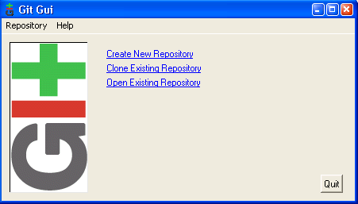

git init* What's up?
git status[slide] * Deciding what is relevant
git add file1 file2 …[slide] =Let's try it= * @
git commit
cp -r base mypaper ; cd mypaper git init git status git add mypaper.tex cvpr.sty git status git commit git status ... and more @=Recap= * Beginning
git init* Working
git add ...
git commit [-m ...]
git status=Recap 2= * Clean projects: ignoring files ** .gitignore file(s) ** blabla.*, !blabla.my_precious, *~ * What did I just modify?
git add ...
git commit [-m ...]
git status* What happened?
git diff [...]
git log=Nota Bene (vs CVS, Subversion)= * Local commit ** commit everywhere (train, plane, here) ** merge with 0-stress ** ! backup * By-project commit * Need to “git add” modifications =GUI for Git= * Bundled with git: git gui  * Many others (qgit, GitX, tortoisegit) =Customizing Git= * Introducing yourself
git config --global user.name "John Doe"* Fancy colors and shortcuts
git config --global user.email john@doe.com
git config --global color.ui true* Configuration in ~/.gitconfig ==[outline]
git config --global alias.st status
git config --global alias.ci commit
git diff cb6dc3[slide] ** can be retreived
git checkout cb6dc3[slide] =Back to the Future: rewriting the past= * gitk, the “git gui” of history * Let's go… =Recap= * Branch ** label for a commit ** automatically follows on commit * Always commit before merging * Use of “sha1” or branch-name (e.g. brrrr) * Shortcuts
cb6dc3, brrrr, HEAD,=Recap 2= * Moving in the history
HEAD^, HEAD^^, HEAD^1, HEAD^42
cb6dc3^42, tagggg
git checkout sha1-or-branch-name* Creating a new branch at current position
git checkout -b new-branch-name* Merging “brrrr” into “master”
git checkout master=Recap 3= * Automatic git merge ⇒ automatic commit * On conflicting git merge ** (partial merge) ** solve conflict ** git add ** git commit
git merge brrrr
git clone ~bob/repo/papier [mypaper][slide] * Pulling latest modifications
git pull [origin master][slide] * Pulling = fetch + merge
git fetch[slide] =Distributed Version Control System= * Full local repository ** in-plane commit ** 0-stress merge * Pull (fetch+merge)[slide] ** from the “origin”
git merge
git pull** from any “remote”
git remote add john-repo ~john/…
git pull john-repo master=Creating a Shared “Centralized” Repository= * Concepts ** “bare” repository (no classical files) ** “shared” access * From scratch
git pull john-repo experiment
git --bare init --shared=group* From an existing repository
git clone --bare /home/john/repo/cvpr [...]=Contributing to a Shared Repository= * Init: git clone ... * Hack hack hack * git commit hack git commit hack git commit[slide] * Merge and solve conflicts: git pull[slide] * Share: git push [origin master][slide] * (see also: git rebase)[slide] =Team Work= * Distributed or Centralized? * Shared branches? * Never break the “master”[slide] * File formatting[slide] ** do not reformat sources (.tex, ...) ** 1 sentence = 1 line ? ** avoid double-spaces =Last Git Things= * Working Over the Network ** nfs ** ssh, http, “git” ** svn, cvs
cd ....
git config core.sharedRepository group
git clone https://github.com/twitwi/ResearchTipsAndTricks.git==Fin==
− − /
← →